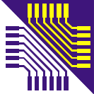

Copyright © 2021 by Jędrzej Matuszewski (e-mail:
jedrzej@matuszewski.net)
WEII PK
Wprowadzenie
|
Specyfikacja
|
Charakterystyka programu
|
Funkcje programu
Wprowadzenie
Przedstawiony program stanowi rozwiązanie zadania 1. z przedmiotu Projektowanie Aplikcji.
Specyfikacja
Aplikacja została wykonana w języku Java. Wykorzystuję środowisko JavaSE-1.8.
Graficzny interfejs użytkownika został zbudowany w oparciu o bibliotekę Swing.
Charakterystyka programu
Aplikacja składa się z następujących komponentów (klas):
App - klasa uruchomieniowa.
MainFrame - dziedziczy po JFrame; główne okno aplikacji.
JMenu - menu główne aplikacji.
ToolBar - dziedziczy po JToolbar; pasek narzędziowy.
RightPanel - dziedziczy po JPanel; prawa część aplikacji, znajdują się tutaj przyciski sterujące.
LeftPanel - dziedziczy po JPanel; prawa część aplikacji, znajdują się tutaj:
JTextField - pole wprowadzania liczby do tabeli.
JSpiner - dwa pola służące do wyboru wiersza/kolumny.
DataTable - dziedziczy po JPanel, zawiera komponent JTable;
JList - lista, wybór operacji
TextPanel - dziedziczy po JPanel, zawiera komponent JTextArea; jest to główne pole tekstowe wyświetlające rezultat wykonanej operacji
BottomPanel - dziedziczy po JPanel; dolna część aplikacji, znajdują się tutaj:
JTextField (info) - pole tekstowe, wyświetla nazwę wykonywanej operacji
JTextField (status) - pole tekstowe, wyświetla status (OK\ERROR) wykonywanej operacji
JButton - liczne przyciski występujące w aplikacji
JLabel - opisy tekstowe pól występujących w programie
Funkcje programu
Program obsługuję następujące polecenia:
Suma liczb w tabeli
Wartość średnia liczb w tabeli
Wyświetlenie wartości minimalnej/maksymalnej spośród liczb w tabeli
Zerowanie tabeli
Wprowadzanie losowych liczb do tabeli
Eksport danych do pliku
Import danych z pliku
Wprowadzenie
|
Specyfikacja
|
Charakterystyka programu
|
Funkcje programu